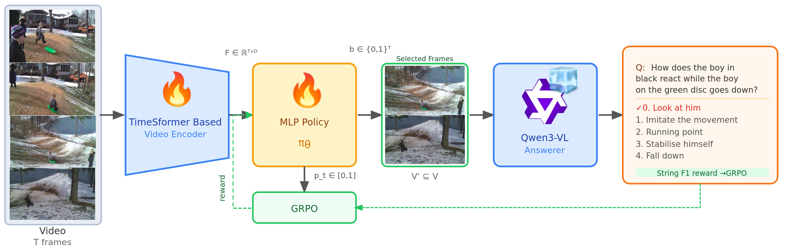
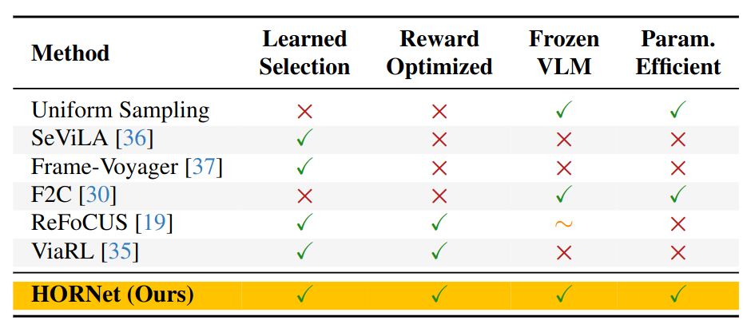
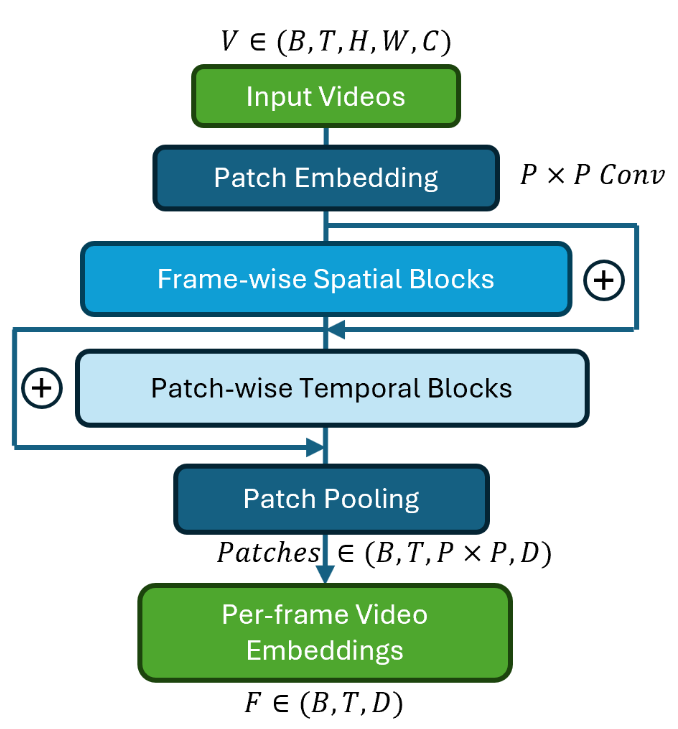

Figure 1. Given a video with T uniformly sampled frames, a TimeSFormer-based encoder extracts per-frame features. A lightweight MLP policy πθ scores each frame, producing a binary selection mask. Only selected frames are passed to the frozen Qwen3-VL answerer. GRPO trains the policy using group-normalized rewards from the VLM's answers.
Video question answering (VQA) with vision-language models (VLMs) depends critically on which frames are selected from the input video, yet most systems rely on uniform or heuristic sampling that cannot be optimized for downstream answering quality. We introduce HORNet, a lightweight frame selection policy trained with Group Relative Policy Optimization (GRPO) to learn which frames a frozen VLM needs to answer questions correctly. With fewer than 1M trainable parameters, HORNet reduces input frames by up to 99% and VLM processing time by up to 93%, while improving answer quality on short-form benchmarks (+1.7% F1 on MSVD-QA) and achieving strong performance on temporal reasoning tasks (+7.3 points over uniform sampling on NExT-QA). We formalize this as Select Any Frames (SAF), a task that decouples visual input curation from VLM reasoning, and show that GRPO-trained selection generalizes better out-of-distribution than supervised and PPO alternatives. HORNet's policy further transfers across VLM answerers without retraining, yielding an additional 8.5% relative gain when paired with a stronger model.
Existing frame selection methods satisfy at most two of four desirable properties. HORNet is the first to achieve all four.


Figure 2. HORNet encoder E is built on the TimeSFormer architecture. Input frames are patchified with a P×P convolution, then processed by spatial self-attention independently within each frame to capture intra-frame relationships such as object appearance and spatial layout.
A second transformer stack performs temporal self-attention across frames at each patch position to capture motion patterns and temporal dependencies. This factorized design preserves temporal modeling capacity while avoiding the prohibitive cost of joint attention over all tokens.
The resulting temporally contextualized patch tokens are pooled to yield per-frame video representations F ∈ RT×D used by HORNet for frame selection. We set P=16, T=32, D=768.
See how HORNet selects semantically relevant frames compared to Qwen's uniform sampling baseline. HORNet focuses on action-critical moments while discarding distractors.
Frame images will be added. Placeholders show frame indices selected by each method.
| Dataset | Model | F1-Lev ↑ | Frame Sel. (s) ↓ | Qwen Proc. (s) ↓ | Avg. Frames ↓ |
|---|---|---|---|---|---|
| MSVD-QA | Qwen3-VL-2B (Baseline) | 0.3483 | — | 0.28 | 11.65 |
| HORNet + Qwen3-VL-2B | 0.3543 +1.7% | 0.12 | 0.10 ↓64% | 4.00 ↓66% | |
| MSRVTT-QA | Qwen3-VL-2B (Baseline) | 0.3209 | — | 0.58 | 47.52 |
| HORNet + Qwen3-VL-2B | 0.3029 -5.6% | 0.09 | 0.09 ↓84% | 4.00 ↓92% | |
| NExT-QA OE | Qwen3-VL-2B (Baseline) | 0.3045 | — | 1.01 | 1157.88 |
| HORNet + Qwen3-VL-2B | 0.2738 -10.1% | 0.52 | 0.19 ↓81% | 8.00 ↓99% |
| Dataset | Model | Accuracy (%) ↑ | Frame Sel. (s) ↓ | Qwen Proc. (s) ↓ | Avg. Frames ↓ |
|---|---|---|---|---|---|
| VideoMME | Qwen3-VL-2B (Baseline) | 68.30 | — | 2.53 | 3066.73 |
| HORNet + Qwen3-VL-2B | 52.10 -16.2% | 1.51 | 0.18 ↓93% | 8.00 ↓99% | |
| ActivityNet-QA | Qwen3-VL-2B (Baseline) | 75.00 | — | 2.37 | 3152.49 |
| HORNet + Qwen3-VL-2B | 68.80 -6.2% | 1.64 | 0.17 ↓93% | 8.00 ↓99% | |
| NExT-QA MCQ | Qwen3-VL-2B (Baseline) | 76.80 | — | 0.98 | 1157.88 |
| HORNet + Qwen3-VL-2B | 71.50 -5.3% | 0.53 | 0.25 ↓74% | 8.00 ↓99% |
All methods select 4 frames. On NExT-QA, HORNet outperforms uniform by +7.3 points.
| Strategy | MSVD | MSRVTT | NExT-QA |
|---|---|---|---|
| Random | 0.3527 | 0.3027 | 65.88 |
| Uniform | 0.3493 | 0.3058 | 64.24 |
| HORNet | 0.3543 | 0.3029 | 71.50 |
Same HORNet policy, different VLM. +8.5% gain with stronger model.
| VLM Answerer | Size | F1-Lev ↑ |
|---|---|---|
| Qwen3-VL (baseline) | 2B | 0.3483 |
| Qwen3-VL + HORNet | 2B | 0.3543 |
| Qwen2.5-VL + HORNet | 3B | 0.3846 |
@article{bai2026hornet,
title={HORNet: Task-Guided Frame Selection for Video Question
Answering with Vision-Language Models},
author={Bai, Xiangyu and Galoaa, Bishoy and Ostadabbas, Sarah},
journal={arXiv preprint arXiv:2603.18850},
year={2026}
}